Gallery
Nemo's Gallery
Finding Nemo tells the story of an overprotective clownfish named Marlin who, along with a regal blue tang named Dory, searches for his missing son Nemo. Along the way, Marlin learns to take risks and comes to terms with Nemo taking care of himself.
-
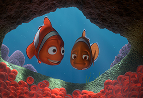
Birth of Nemo
Survive the shark attack
-
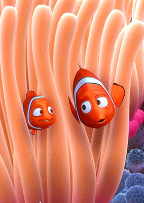
First day at school
Listening to instructions from Marlin when going to school
-
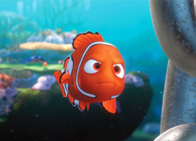
Nemo's challenge
Nemo's challenge
-
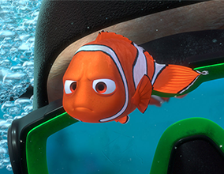
Be caught
Nemo caught by a diver
-
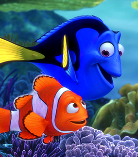
Meet
Marin met her friend Dory
-
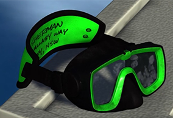
Clue
Marin and Dory departed for Sydney
-
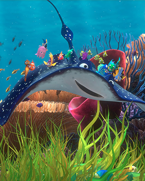
Mr. Ray's Class
Mr. Ray like an underwater magic carpet
-
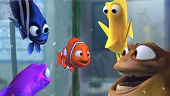
The Tank Gang
Gill, Peach, Bloat, Gurgle, Deb, Bubbles, and Jacques
-
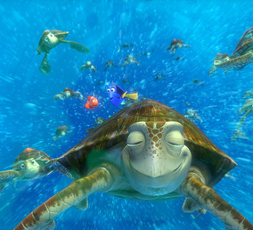
East Australian Current
Crush and his offspring Squirt know how to chill and go with the flow
-
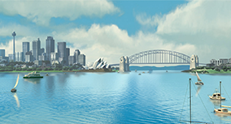
The Harbor
Sydney Harbor, bustling with trawling fishermen, a sewage treatment plant, views of iconic Sydney landmarks
-
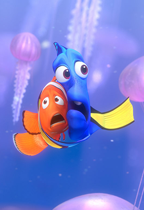
Jellyfish
One of the most beautiful scenes in the movie, and one of the scariest
-
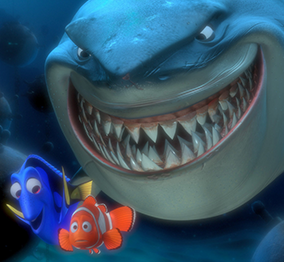
Sharks
In the end, they have embraced a “veggie” lifestyle, allegedly swearing off fish, and living off politically correct kelp instead
-
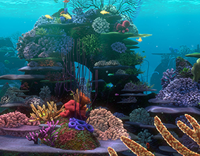
The Drop Off
Safety of his home on the coral reef for the depths of the great unknown
-
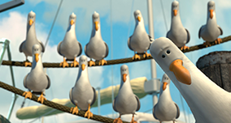
Scene stealer
Seagulls only say "Mine"...
-
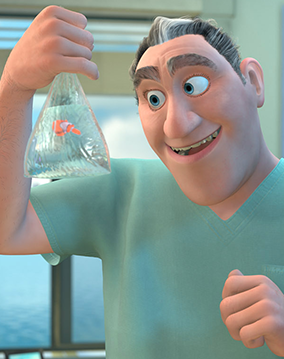
Dentist
Don't be angry with the dentist for taking Nemo
-
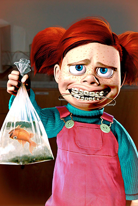
Darla
Darla, you can't shake the fish
-
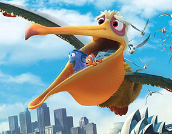
Nigel
Nigel is a lifesaver
-
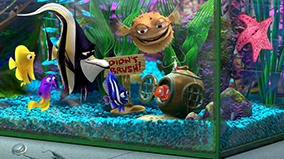
Operation to escape the aquarium
Operation to escape the aquarium
-
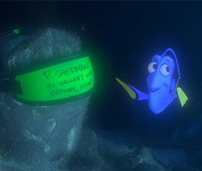
Talented
Dori can speak English, too
-
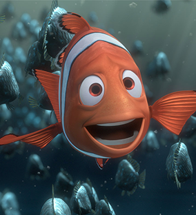
Brave
Dad is great
-
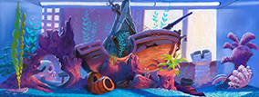
The Tank
Intended to amuse children visiting the dentist’s office, the fish tank in Finding Nemo
-
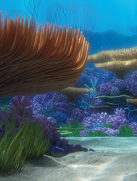
The Reef
Intended to amuse children visiting the dentist’s office, the fish tank in Finding Nemo
-
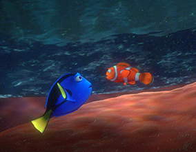
The Whale
Inside the whale it’s dark, and in a dark environment, the lighting requires extreme precision
-
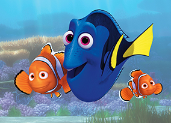
We Are Friends
Their friendship will last forever
-
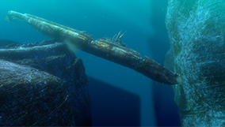
The Sunken Ship
The filmmakers wanted a chase scene involving Dory, Marlin, and great white shark Bruce
-
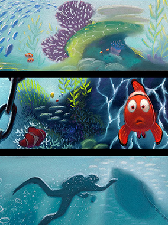
Colorscript
A colorscript is a sequence of small pastel drawings or paintings used to emphasize color in each scene and establish a film's visual language
-
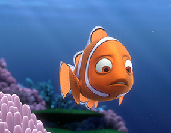
Coral
Proud mother-to-be Coral is a freethinker who opts for the more creative name of "Nemo" for one of her babies
-
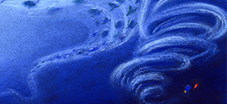
Current
East Australian Current (EAC) had compelling qualities